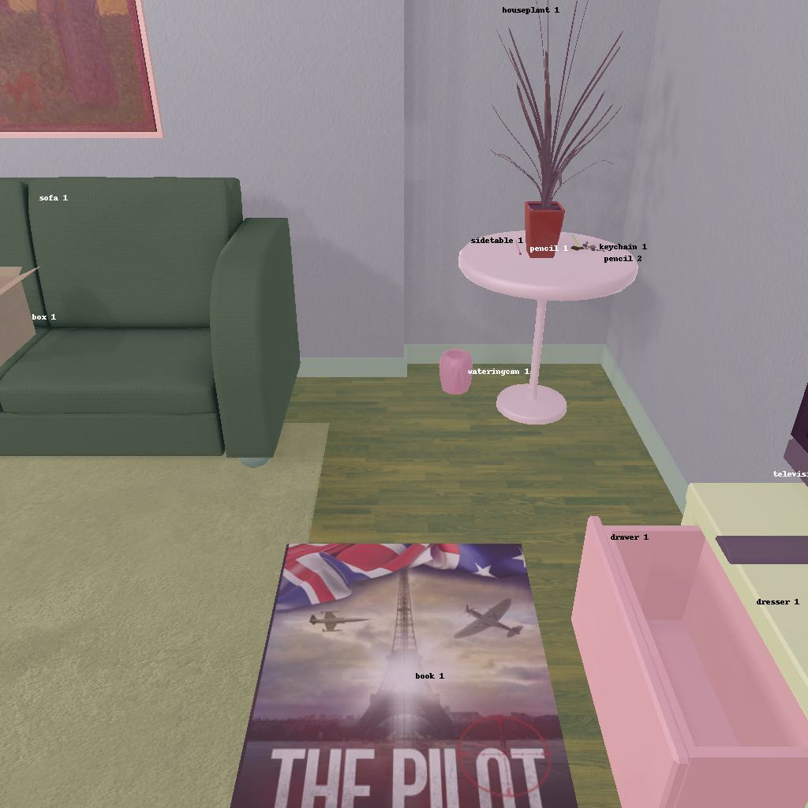

---------------------------------------------------------task: 5---------------------------------------------------------
--------------------------------------------------------------------------------------------------------------------------------------------------------------------
--------------------------------------------------------------------------------------------------------------------------------------------------------------------
Step:--------------------------------------------------------------------------15-------------------------------------------------------------------------------
----------------------------------------
VLM Prompt:
Image1:
**Instruction**
1. Analyze the provided image to identify all visible household objects, focusing on those relevant to the task description "put some book on armchair."
2. Use the analysis of the image and the task hint "The agent must find an object of the desired type, pick it up, find the correct location to place it, and put it down there." to answer the question: what is the most reasonable action in the choices for the task description "put some book on armchair"?
4. Decide and write the answer using the template: The answer is: (i): , where i is the real number. If there is no desired object in the image, search every place based on **Initial Observation** to find the object. And if no one is exactly correct, choose a similar answer.
**Initial Observation**
You are in the middle of a room. Looking quickly around you, you can see armchair (1), sofa (1), coffeetable (1), drawer (1-4), sidetable (1-3), dresser (1)
**Answer Choices**
(1): go to armchair 1
(2): go to sofa 1
(3): go to coffeetable 1
(4): go to sidetable 1
(5): go to dresser 1
(6): go to drawer 2
(7): go to drawer 3
(8): go to drawer 4
(9): go to sidetable 2
(10): go to sidetable 3
(11): open drawer 1
(12): close drawer 1
(13): put book 1 in/on drawer 1
(14): examine book 1
(15): examine drawer 1
**Answer**
Let's think step by step by following the instructions.
----------------------------------------
----------------------------------------
Original Response:
The task is to "put some book on armchair." Analyzing the image, we can see book 1 on the floor. Therefore, the first action should be to pick up the book. However, none of the provided answer choices include picking up the book. The most reasonable action from the choices would be to approach the book first. Since the book is not on any of the objects listed in the answer choices, we need to rely on the initial observation, which indicates the presence of an armchair that is not visible in the image. The closest action that would lead to completing the task would be to go to the armchair, with the assumption that the agent will pick up the book along the way or when reaching the armchair.
The answer is: (1): go to armchair 1.
----------------------------------------
----------------------------------------
>>> Refine Original VLM Response and Get Pure Action: go to armchair 1
----------------------------------------
-----------------------------------------------------------------
Running time: 8.821705102920532 seconds
Total Money: 1.5363200000000006
-----------------------------------------------------------------
-----------------------------------------------------------------
Text Observation:You arrive at loc 0. On the armchair 1, you see a lightswitch 1, and a floorlamp 1.
-----------------------------------------------------------------
UNSUCCEED